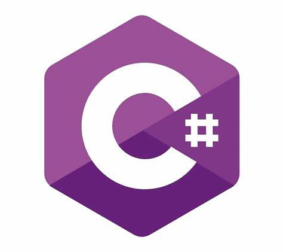
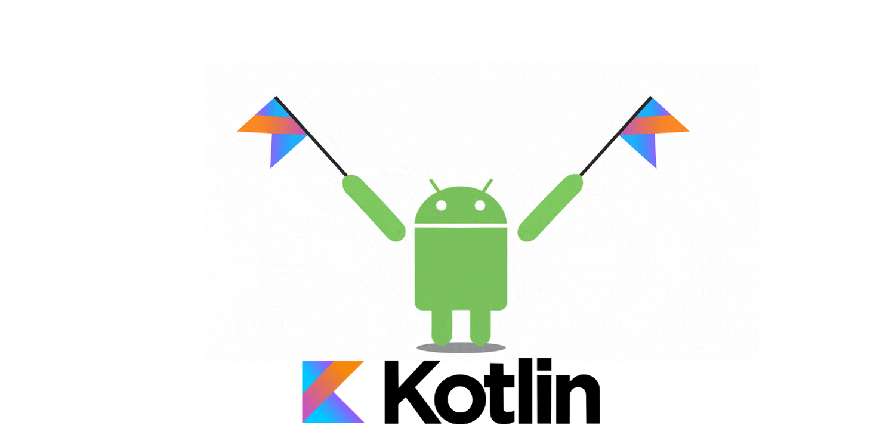

David Tortosa
¡Bienvenido a mi Página Personal!
Esta página es una ventana a mi viaje en el mundo del desarrollo de aplicaciones multiplataforma.
Aquí podrás conocer mi trayectoria, habilidades y pasiones. Desde mi evolución como profesional hasta mis intereses personales,
esta página refleja mi compromiso con el aprendizaje constante y la búsqueda de nuevas oportunidades.
Explora cada sección para conocer más sobre mí y lo que puedo aportar a tu equipo. Desde mis experiencias en la industria
hasta mis habilidades técnicas y pasatiempos, espero que esta página te brinde una visión integral de quién soy y
cómo puedo contribuir al mundo de la tecnología.
¡Gracias por visitar y espero que encuentres esta página inspiradora y llena de posibilidades!
Hola, Soy David Tortosa. Encantado de conocerte.
Sobre Mí... Soy, un profesional con una trayectoria laboral de 12 años en la misma empresa. Durante los últimos 6 años, he tenido el honor de desempeñar el rol de encargado, liderando equipos y proyectos con éxito. Mi historia en la industria comenzó como un camino convencional, pero mi pasión por la programación despertó una nueva dirección. Empecé a estudiar en línea, consumiendo cursos y adquiriendo conocimientos a mi propio ritmo. La satisfacción de escribir código y crear soluciones me impulsó a tomar un enfoque más serio. Me inscribí en un ciclo superior de Desarrollo de Aplicaciones Multiplataforma. Este paso fue un momento clave en mi búsqueda por mejorar mis habilidades y descubrir nuevas posibilidades en el desarrollo de software. Cada línea de código que escribo refleja mi dedicación y entusiasmo por el desarrollo multiplataforma. Mis logros como líder me han enseñado la importancia de la colaboración y la entrega de resultados excepcionales. Ahora, como desarrollador, asumo un reto que abrazo con ilusión. Mis años de experiencia me han brindado habilidades de gestión, resolución de problemas y comunicación efectiva. Estoy decidido a aplicar esta base sólida al mundo del desarrollo, donde cada proyecto es una oportunidad de crecimiento y creatividad. Mi misión es crear soluciones impactantes y funcionales que marquen una diferencia. Siempre estoy en búsqueda de aprendizaje continuo y nuevas formas de enfrentar desafíos. Este viaje de autodescubrimiento y superación es lo que me impulsa a dar lo mejor de mí cada día. Estoy emocionado por el futuro y las oportunidades que el desarrollo multiplataforma tiene reservadas. ¡Afrontemos este nuevo camino juntos!
-

Durante mi formación en el ciclo de Desarrollo de Aplicaciones Multiplataforma, he adquirido habilidades sólidas en el lenguaje de programación Java. He explorado su versatilidad y potencia en el desarrollo de aplicaciones, desde programas de consola hasta aplicaciones web y móviles. Mi experiencia en Java me ha permitido comprender la importancia de la orientación a objetos y la capacidad de construir soluciones escalables y eficientes.
-

También tuve la oportunidad de estudiar y trabajar con C#, un lenguaje de programación potente y versátil. Utilicé C# en el contexto de desarrollo de interfaces y aplicaciones en la plataforma .NET. A través de esta experiencia, aprendí a aprovechar las funcionalidades de C# para crear aplicaciones modernas y funcionales que aprovechan el ecosistema de .NET para ofrecer soluciones robustas y eficientes.
-

Estudiando el desarrollo de aplicaciones móviles descubrimos el lenguaje de programación Kotlin. Al trabajar con Android Studio, pude apreciar las ventajas de Kotlin en comparación con otros lenguajes para el desarrollo de aplicaciones Android. Su sintaxis concisa, nulabilidad segura y características modernas lo convierten en una elección ideal para crear aplicaciones móviles robustas, eficientes y altamente mantenibles.
-

Lenguaje de Marcas: Mi formación también abarca el mundo de los lenguajes de marcado, incluyendo HTML, CSS y JavaScript. Estos lenguajes son esenciales para el desarrollo web moderno. Con HTML, puedo estructurar contenido de manera semántica, mientras que CSS me permite dar estilo a las páginas para una experiencia visual atractiva. Además, JavaScript agrega interactividad y dinamismo a mis proyectos, permitiéndome crear aplicaciones web interactivas y atractivas.
-

SQL: Durante mi formación, también he adquirido conocimientos en SQL, el lenguaje de consulta estructurada. A través de SQL, he aprendido a gestionar y manipular bases de datos de manera eficiente. Esto me permite diseñar y optimizar consultas para acceder y gestionar datos, contribuyendo al desarrollo de aplicaciones robustas y con capacidad de almacenamiento y recuperación de información de manera efectiva.
-
A través de MongoDB, he aprendido a diseñar y gestionar bases de datos no tradicionales, aprovechando su flexibilidad y escalabilidad. Esta experiencia me permite elegir la tecnología de base de datos más adecuada para cada proyecto y garantizar un almacenamiento y recuperación de datos eficiente y adaptado a las necesidades específicas.
Aficiones
Soy una persona apasionada por una variedad de actividades que enriquecen mi vida tanto personal como profesional. Algunos de mis intereses incluyen:
- Lectura: Me encanta sumergirme en diferentes géneros literarios y explorar nuevas historias y perspectivas a través de la lectura. Disfruto de los libros que me desafían y me permiten expandir mi horizonte.
- Series y Cine: Tanto las series como el cine son formas de arte que me cautivan. Me gusta explorar una amplia gama de géneros, desde dramas hasta comedias y ciencia ficción. Siempre estoy en busca de historias que me inspiren y entretengan.
- Pádel: El pádel es una de mis actividades favoritas para mantenerme activo y en forma. Disfruto de la competición amistosa y de la oportunidad de socializar mientras juego. Es una forma divertida de liberar energía y mantenerme en movimiento.
- Amor por los Animales: Tengo una pasión especial por los animales y he tenido la fortuna de compartir mi vida con dos adorables perros. Además de ser compañeros leales, también practico agility con ellos desde hace 10 años. Esta actividad nos permite fortalecer nuestros lazos y disfrutar de momentos llenos de energía y diversión juntos.
- Viajar en Furgoneta Camper: Una de mis mayores pasiones es viajar y explorar nuevos lugares. Me encanta la libertad y la aventura que ofrece viajar en furgoneta camper. Especialmente, disfruto de la compañía de mis perros mientras recorremos paisajes impresionantes y descubrimos lugares únicos juntos.
Estos intereses no solo enriquecen mi tiempo libre, sino que también me brindan un equilibrio que impacta positivamente en mi trabajo y en mi capacidad para afrontar nuevos desafíos con creatividad y entusiasmo.
Búsqueda de Prácticas Profesionales
Actualmente, me encuentro en la búsqueda de una empresa en la que pueda llevar a cabo mis prácticas profesionales como parte de mi formación en desarrollo de aplicaciones multiplataforma. Estoy entusiasmado por la oportunidad de aplicar mis conocimientos y habilidades en un entorno real, y contribuir de manera significativa al equipo. Si tu empresa valora la innovación, el trabajo en equipo y está dispuesta a ofrecer una experiencia formativa en la que pueda aprender y crecer, estaré encantado de ser parte de su equipo de prácticas.
Contacta conmigo
Si deseas ponerte en contacto conmigo para discutir oportunidades de prácticas o cualquier otra consulta, no dudes en hacerlo.
Puedes comunicarte conmigo a través de los siguientes medios:
- Email pintajarto@gmail.com
- Movil 633445553
Estoy emocionado por las posibilidades que el futuro tiene para ofrecer y ansioso por contribuir con mi pasión y
conocimientos a un equipo comprometido y dinámico.